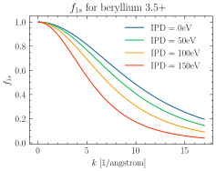
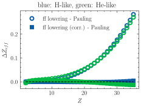
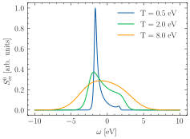

Example gallery
Below is a gallery of examples


Calculate the full structure factors for various plasma conditions
Analysis module examples


bound-free scattering examples


Electronic local field correction examples
form-factor examples

Full atomic Formfactors according to Pauling and Sherman

Plot form factor lowering effect for Beryllium


Zero IPD limit for effective charge when using form factor lowering
free-bound scattering examples

Showcase the DetailedBalace free-bound scattering Model

Showcase of the relavance of including free-bound scattering

free-free scattering examples

Plot See0 using the Quantum corrected Salpetera approximation


Number of interpolation in the Born Mermin Chapman Interpolation

Showing the relevance of the Born Mermin Approximation
Ionic scattering examples

Plot static structure Factors in the Approximation by Arkhipov and Devletov


Plot static structure factors in the Approximation by Gregori for T_i != T_e


Plot static structure factors in Charged Hard Sphere Approximation


LatticeDebyeModel for approximating diffuse scattering in crystals

Static structure factor of the electron-ion system

HNC-SVT: multi-component, multi-temperature (M-SVT)

Ionization examples

Rayleigh weights for integer expanded ionization states

Setup Examples
Examples related to the jaxrts.Setup class.